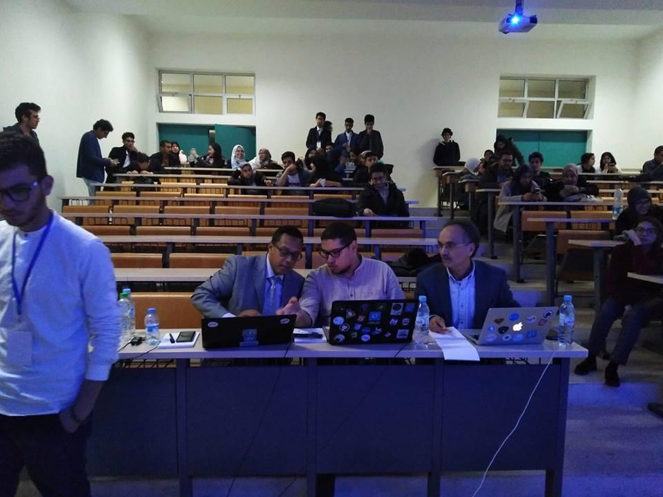

INSEA IT, one of the very first founded clubs in our institute, known for its authenticity and genuineness. A foundation, as solid as it may seem, has been reinvented 2 years ago for it to include other majors as well. Innovative, receptive and unconventional; it keeps on giving birth to new ideas and accomplishments such as the IT VILLAGE. And this year, in its second edition, a conference was held along with a competition and many workshops followed. So, let us recap steadily the latter encounters in what’s coming next.
Starting off with a conference under the theme: Artificial intelligence what perspective for the market. Where this infrastructure is seen from a practical position for it to conform to the market needs and hopes. A topic tackled by the researcher professor Adil KABBAJ, owner of a PhD in AI and author of two books, joined by a specialist in Deep learning and a developer in Big Data and cloud applications at IBM,Mr Abdelhak MAHMOUDI and finally Mr. Mohamed AALABOU the CEO of Jusk and founder of Quarya.
With opening words from our president, the conference took off first with Mr. KABBAJ’s intervention. Where he shed light on what is AI, its work fields, its applications, its approaches and its learning fields. He then finished it all with a question; that perpetuates to some a concern and to others a goal; ‘can the intelligent machine ever be equal to us humans?’. And the answer was a definitive no, since the human being is fully consumed by the outer world to the point that is intrinsic to his existence, such an external placement could never be implemented to the machine.This full-length lecture was preceded by the young entrepreneur’s intervention Mr. AALABOU, which was a smooth yet very insightful rupture with what is theoretical to what is practical about AI. Talking from a business like perception, the CEO discussed the market needs and its thirst for data scientists. A demand that is being ignored by engineering schools since the training they give does not come hand in hand with the market demands, the students are then left alone with the burden to fit their training into the market aspirations.
The dismay that was once expressed by Mr AALABOU was immediately justified in the last intervention given by Mr MAHMOUDI by emphasizing on the power of theoretical research and the impact it has on the market. He pursued then to talk about the actual state of AI, what is machine learning, the life cycle of a machine learning project and how could i put to use these practices to tackle data science. And the cherry on top were his advices regarding sharing codes and to never stop learning and researching.

The conference was put to an end, but the everlasting debate between what is practical and what is theoretical is still on. And to join the two, the Accelerathon in its first edition; was up for the challenge. The competition was held from 22h.00 to 14h.00, 16 hours of work and 9 teams involved. From energy, health, agriculture to industry and so on… each team was given a subject in order to handle it from an AI perspective to generate a social impact.
After hours of labor, the participants finally presented their product in front of the jury that was composed of Mr Sohayb El amraoui a Data Scientist at FinaMaze ,Mr Rachid Baarbi the CIIO of the “Assurences Lyazidi” and Mr El houcine Bouyakhf the founder and president of the LIMIARF laboratory the first AI laboratory in Morocco .
But before those two workshops were held, one about cyber security and the other was about data science from a business point of view. The teams made proof of perseverance, engagement and creativity that was quite apparent in the outcome’s quality as well as the positive feedback from the judges.
Unfortunately, there can be only one winner and it was the team composed by two master students of our institute: Simohammed OUBAKHAYI and Saif Eddine FD. The winner project was about agriculture, where the two teammate configurated an intelligent machine able to spot an infected fruit or veggie and later on identify the disease.
It’s where abstract meets concrete and innovation finds its roots. IT VILLAGE explored it all. And to top it all off, an open buffet was held for the jury, the participants and the audience to celebrate the success of this newest edition of the event.
Sharing knowledge is our motto, but we did share a greater deal that this. Frustration, exasperation, exhaustion, delight, joy, success, accomplishment and new experiences were encountered too. So set your schedules and be ready for next year’s edition, a much more brighter, bigger and better version is coming your way. Until we meet again